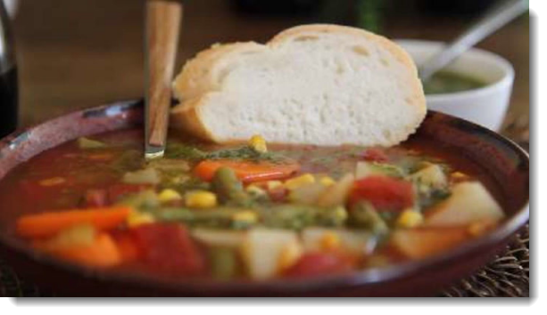

Prep Time: 15 mins
Cook Time: 35 mins
Total Time: 50 mins
Serves: 6
Gather all of your ingredients together.
Combine tomatoes, chicken broth, tomato juice, carrots, celery, potato, corn, and water in a large stockpot. Season with salt, pepper, and Creole Seasoning.
Bring to a boil over medium heat and simmer until vegetables are tender, about 30 minutes.
Serve hot and enjoy! Make sure that you don't burn your mouth!!
Back...